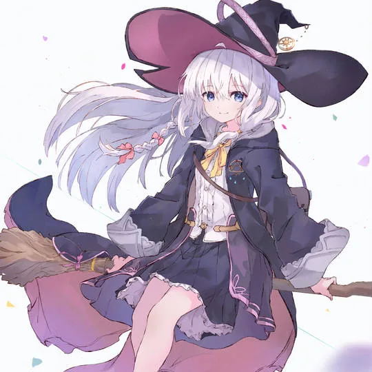

已完成
猜数字小游戏
电脑随机出 1–100 的数字，提示「大了 / 小了」，直到猜中并统计次数。单文件 Python 实现，用命令行运行。
Python命令行

灰之魔女 · 一个人旅行，边走边把见闻记下来。
这个站就是那份手记 —— 写代码，也写点生活。
WANDERING WITCH
向き · 个人主页
点击任意处开始 · Enter / Esc 跳过
向 き
正在准备… · 0%
沈阳理工大学 · 网络工程
我是一名
在沈阳理工大学读网络工程。喜欢写代码，能用 C / C++ 和 Python 把想法实现出来；
也喜欢在动漫与游戏里寻找灵感。最近在研究 AI，试着把它真正用进日常的学习和开发里。
取这个名字的时候正迷《魔女之旅》——喜欢那种一个人上路、边走边把见闻记下来的感觉。所以这个站也算我的旅人手记：写代码，也写点生活。
你好，我是 向き（读作 MUKI）。现在是 沈阳理工大学 信息科学与工程学院 的学生，专业是 网络工程。
我的名字取自《魔女之旅》——喜欢那种一个人上路、边走边把见闻记下来的感觉，所以这个网站也算是我的一份「旅人手记」。
平时的主线是 写代码。能用 C / C++ 和 Python 把想法实现出来，从算法题到小工具都愿意动手试一遍。对网络协议、系统底层和人工智能都很好奇，遇到不懂的会先记下来，等哪天回头发现已经懂了。
学习之外我是个标准的 二次元 + 游戏玩家：看番、打游戏是主要放松方式，也常常因为喜欢某个游戏或某段剧情，冒出「自己动手做点什么」的念头。
最近在做的事是 研究 AI，想把它真正用进日常的学习和开发里，而不是只当个搜索引擎。
眼下最想做到的事：把专业课的基础打扎实，同时攒出几个拿得出手的成品——这个网站是第一个。
把 AI 用进日常、把专业课基础重新过一遍、再做几个能拿出手的成品——三条线一起推进，慢是慢了点，但都没停。
把 AI 用进日常
不只把大模型当搜索引擎。在试着让它帮我读代码、整理笔记、搭小工具——重点是「真的省下时间」，而不是看起来很酷。
把基础打牢
网络工程的专业课不能只靠考前突击。数据结构、计算机网络、操作系统这几门，我在按自己的节奏重新过一遍，配套把题也刷起来。
做点看得见的东西
学编程最容易卡在「只看不写」。所以从猜数字到这个小站，我都坚持自己动手跑通一遍——能给别人看的成品，才算真的学会。


如果你也对编程、动漫、游戏或者 AI 感兴趣，欢迎随时找我聊聊。
这里放的是我正在学的技能、走过的路线、上过的课，以及动手做出来的东西。不求看起来厉害，只求每一条都拿得出手。
技术栈这类东西最怕停在名字上。所以每学一样，都尽量配套做出一个小东西——哪怕只是几行能跑通的代码。
按自己的节奏把基础课重新过一遍，再往上叠方向。走得慢没关系，别在原地绕圈就行。

看不懂就放一放，回头看往往就懂了。真正卡住的从来不是难度，是急着「看起来学完了」。
拿到新东西先写个能跑的最小例子，有了感觉再回头看原理。卡住超过半小时就记下来，不硬耗。
笔记不抄课件。合上书，用自己理解的话重写一遍——写不出来，就是还没懂。
小游戏、工具、这个网站。有成品才有压力把细节做对，也才知道自己哪块是虚的。
用它解释概念、查报错、提思路；但代码要自己敲一遍，不然下次还是不会。

课堂给的是地图，剩下得自己走。协议、系统、代码，都要在手上过一遍才算数。
沈阳理工大学网络工程专业是 辽宁省一流专业建设点，专业特色为 网络安全。2024 年软科中国大学专业排名中，网络工程位列 第 63 位（共 199 所高校参评），专业评价 B+，辽宁省内第四。
专业立足国防特色，注重夯实数学与自然科学基础，培养目标覆盖网络系统设计、开发、运维与安全保障，毕业去向包括网络通信运营企业、政府事业单位、大中型企业网络信息中心、互联网企业与网络设备研发制造企业等。网络工程也是 2015 年以来连续多年的 「绿牌专业」。
专业与多家国内网络安全头部企业建立了深度合作，形成培训—实习—就业的闭环。
资料来源：学院官网专业介绍

这个站是第一个成品：纯静态、零依赖、手写 HTML/CSS/JS。往后每学一样，都往上面叠一层。
电脑随机出 1–100 的数字，提示「大了 / 小了」，直到猜中并统计次数。单文件 Python 实现，用命令行运行。
就是你正在看的这个页面。纯静态 HTML / CSS / JavaScript 手写，托管在 GitHub Pages 上。
试用各种大模型与 Agent，记录哪些场景真的能把效率提上去，哪些只是噱头。
用 C / C++ 刷简单算法题，重点是理解思路而不是背题解。
每一枚标签都是一件学过或在学的东西。点「倒下来」让它们自己落地堆叠 —— 下面这些是真的重力、碰撞和摩擦算出来的。

看动漫的时候喜欢沉浸在故事与画面里，从热血番到治愈番都看，也常常被一句台词戳中。玩游戏偏爱有设计感的单机与独立作品，会忍不住去研究它的玩法机制。
剩下两块时间给了 AI 和写代码：一边折腾大模型和各种工具，一边用 C / C++ / Python 把想法实现出来，享受「跑通了」那一刻的成就感。
同人插画来自 elaina1017.com 的公开画廊；角色版权归原作者 白石定规 / あずーる 所有，仅作个人非商业展示。
签文只是借口，真正有用的是每天给自己留一分钟，想想今天要去哪、要做什么。
★ 9.2魔女之旅
白石定规 · あずーる
我心里危险的东西
樱井纪雄
★ 8.7碧蓝之海
井上坚二 · 吉冈公威
JoJo 的奇妙冒险
荒木飞吕彦 · 全系列

《魔女之旅》的伊蕾娜一个人旅行，边走边记录——本站的背景、配色和那句「写代码，也写点生活」都来自这部作品。
音游
Phigros · Rizline · 世界计划
类银河恶魔城
空洞骑士 · 奥日 · 苍翼
Galgame
Rewrite · 樱之诗 · 命运石之门
沙盒 / Roguelike
泰拉瑞亚 · 死亡细胞 · 杀戮尖塔
写代码，也写点生活。